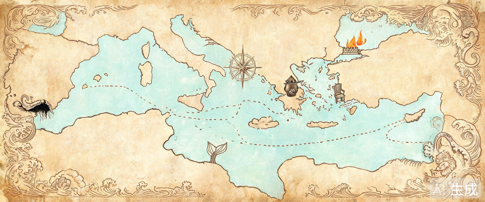

钱袋
德拉克马
血
食
水
Lv.
1
🔊 音效
海图
任务
背包
风袋
重新开始
背包
任务日志

海 图 · 地 中 海
已解锁
待开放
你的船
M / Esc 关闭
塞 壬 之 歌 · 歌 词 残 页
抄下这一页（导出 txt）
收好残页
女巫喀耳刻
意图：Xing4.0-29B-Intent · 台词：TeleChat3
记忆
✕
发送
WASD / 方向键 移动 · E 互动 · M 海图 · P 俯瞰 · Esc 关闭对话
点击任意处跳过
奥 德 赛 · 终 章
航 程 的 回 声
继续漂流
从头开始
终 章 · 相 认
「你是谁？」
认下它
所有路都会走到这一问——答案没有对错，只有是不是你的。
荷马史诗 · 空间探索
奥德赛
地中海
奥德修斯的返乡航程 · 按原著走，或亲手改写命运
启航
从头开始
✦ 演示 NPC 智能
WASD / 方向键 移动 · E 互动 · M 海图 · P 俯瞰全岛 · Esc 关闭对话
视觉素材为本项目原创 AI 概念图
NPC 智能 · 现场演示
—— 记忆 · 状态感知 · 好感分档 · 主动性 ——
✕ 关闭
▶ 再演一遍